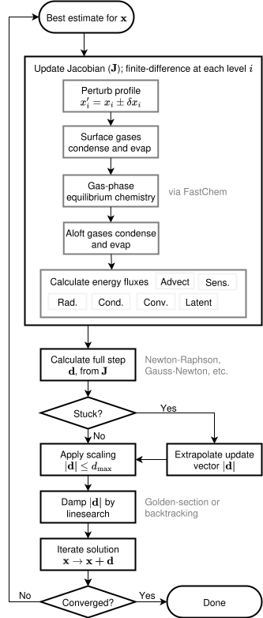

Model description
AGNI is a 1D radiative-convective atmosphere model designed to simulate the climates of rocky exoplanets under extreme conditions [1, 2].
It models a planetary atmosphere as a single column split into $N$ pressure levels (cell-centres) bounded by $N+1$ cell-edge interfaces. Levels are distributed logarithmically in pressure between the surface and the top of the atmosphere. The atmosphere is assumed to be plane-parallel.
Thermodynamic quantities (temperature, pressure, heat capacity, density, composition) are calculated at level-centres; energy fluxes are calculated at level-edges.
Physics overview
AGNI accounts for the following energy transport processes:
| Process | Symbol | Description |
|---|---|---|
| Radiative transfer | $F^\text{rad}$ | Spectral SW + LW radiation; SOCRATES correlated-k |
| Convection | $F^\text{cvt}$ | Mixing-length theory parameterisation |
| Latent heat | $F^\text{lat}$ | Condensation and evaporation of volatiles |
| Sensible heat | $F^\text{sns}$ | Turbulent surface–atmosphere exchange |
| Thermal conduction | $F^\text{cdt}$ | Molecular thermal conduction (negligible except in ionosphere) |
| Deep heating | $F^\text{deep}$ | Advective or interior heat deposition (optional) |
The total net upward-directed energy flux at each cell edge $l$ is the sum of all contributions:
\[F_l = F^\text{sns}_l + F^\text{cvt}_l + F^\text{lat}_l + F^\text{rad}_l + F^\text{cdt}_l\]
For a detailed description of each process, see the corresponding pages in this section:
- Radiative transfer - correlated-k RT with SOCRATES, opacity sources, greenhouse physics
- Atmospheric convection - mixing-length theory, Schwarzschild criterion, convective shutdown
- Thermodynamics and EOS - equations of state, heat capacities, saturation pressures, latent heats
- Composition and chemistry - condensation scheme, ocean model, FastChem equilibrium chemistry
- Sensible heat flux - turbulent surface exchange
- Height structure - hydrostatic integration, self-gravity
- Advective heating - deep heat deposition profile
Obtaining a solution
AGNI is designed for modelling planetary atmospheres with high surface pressures and temperatures. Radiative timescales can differ by many orders of magnitude across the column, which makes time-stepping methods slow to converge. AGNI instead solves for the temperature structure as an optimisation problem - finding the $T(p)$ profile that exactly conserves energy at all levels simultaneously.
Solution types
The solution_type configuration variable specifies the boundary condition for the surface temperature $T_s$:
- (1) Fixed surface temperature. $T_s$ is held constant. Useful for computing the OLR for a prescribed surface temperature.
- (2) Conductive boundary layer. $T_s$ is determined by energy balance through a thin conductive boundary layer (CBL) of thickness $d_c$ and conductivity $\kappa_c$: $F^\text{atm} = \kappa_c (T_m - T_s) / d_c$, where $T_m$ is the prescribed mantle temperature. This is used when coupling AGNI to a magma ocean interior model within the PROTEUS framework [2, 3].
- (3) Free surface temperature. $T_s$ is solved for alongside the rest of the atmosphere, subject to a prescribed net flux $F^\text{atm} = \sigma T_\text{int}^4$, where $T_\text{int}$ is an internal (intrinsic) temperature representing interior heat production.
- (4) Target OLR. $T_s$ and the temperature profile are solved such that the outgoing longwave radiation at the top of the atmosphere matches a user-specified target value.
Construction
The energy flux schemes in AGNI all take cell-centre temperatures $T_l$, pressures $p_l$, geometric heights, and mixing ratios as input variables at each level. In return, they provides energy fluxes $F_l$ at all $N+1$ interfaces.
The total upward-directed energy flux $F_l$ describes the total upward-directed energy transport (units of $\text{W m}^{-2}$) from cell $l$ into cell $l-1$ above (or into space for $l=1$). For energy to be conserved throughout the column, it must be true that $F_l = F_t \text{ } \forall \text{ } l$ where $F_t$ is the total amount of energy being transported out of the planet. In global radiative equilibrium, $F_t = 0$.
Definition of residuals
We solve for the temperature profile of the atmosphere as an $N+1$-dimensional optimisation problem. This directly solves for $T(p)$ at radiative-convective equilibrium without invoking heating-rate calculations, thereby avoiding slow convergence in regions with long radiative timescales. The residuals vector (length $N+1$)
\[\bm{r} = \begin{pmatrix} r_l \\ r_{l+1} \\ \vdots \\ r_N \\ r_{N+1} \end{pmatrix} = \begin{pmatrix} F_{l+1} - F_l \\ F_{l+2} - F_{l+1} \\ \vdots \\ F_{N+1} - F_N \\ F_{N+1} - F^\text{atm} \end{pmatrix}\]
is what we minimise as our objective function, subject to the solution vector of cell-centre temperatures
\[\bm{x} = \begin{pmatrix} T_l \\ T_{l+1} \\ \vdots \\ T_N \\ T_s \end{pmatrix}\]
where $T_s$ is the surface temperature. Cell-edge temperatures in the bulk atmosphere are interpolated from cell-centres. The bottom- and top-most cell-edge temperatures are extrapolated by estimation of $dT/d\log p$. Cell properties (heat capacity, gravity, density, mean molecular weight) are consistently updated at each evaluation of $\bm{r}$. Condensation and rainout are also handled at each evaluation to avoid supersaturation.
The model converges when the cost function
\[\mathcal{C}(\bm{x}) = \left(\sum_l |r_l|^3\right)^{1/3}\]
satisfies
\[\mathcal{C}(\bm{x}) < \mathcal{C}_a + \mathcal{C}_r \cdot \underset{l}{\max}\ |F_l|\]
which represents a state where fluxes are sufficiently conserved. The quantities $\mathcal{C}_a$ and $\mathcal{C}_r$ are the absolute and relative tolerances provided by the user (parameters conv_atol and conv_rtol in solver.solve_energy!()).
Iterative steps
The model solves for $\bm{x}$ iteratively starting from some initial guess. The flowchart below broadly outlines the solution process.

The Jacobian matrix $\bm{J}$ represents the directional gradient of the residuals with respect to the solution vector:
\[J_{uv} = \frac{\partial r_u}{\partial x_v}\]
AGNI estimates $\bm{J}$ using a finite-difference scheme, requiring $2(N+1)$ evaluations of $\bm{r}$. To reduce the total number of calculations, AGNI retains Jacobian columns between iterations when the local residuals are small - this assumes the second derivative of the residuals is small in converged regions.
With a Jacobian constructed, the Newton–Raphson update step is
\[\bm{d} = -\bm{J}^{-1} \bm{r}\]
Gauss-Newton and Levenberg–Marquardt methods are also supported as alternatives.
Three stabilisation strategies are applied to $\bm{d}$:
- Nudging: when the model is stuck at a local minimum ($|\bm{d}|$ is on a plateau), $\bm{d}$ is scaled up.
- Clipping: when $|\bm{d}| > d_\text{max}$, the step is scaled back to $d_\text{max} \hat{\bm{d}}$ to prevent instabilities from the non-convex solution space.
- Line search: if the full step would increase the cost, $\bm{d}$ is scaled by a factor $\alpha$ found by golden-section or backtracking line search. This avoids oscillation around the solution.
Other features
Emission spectra
AGNI can calculate emission spectra from a given $T(p)$ profile and gas volume mixing ratios. The longwave contribution function can also be computed.
Transparent atmospheres
For bare-rock planets, or to determine a planet's surface temperature in the absence of an atmosphere, AGNI supports a transparent atmosphere mode (composition.transparent = true). This sets the atmospheric pressure to a small value and disables all gas opacity and absorption in SOCRATES. Use the dedicated transparent solver in this case.
Julia and Fortran
AGNI is primarily written in Julia [4], while SOCRATES is written in Fortran. Julia's precompilation allows the SOCRATES Fortran binaries to be packaged inside the precompiled Julia code, which significantly improves startup performance.
Bibliography for this page
- [1]
- H. Nicholls, R. Pierrehumbert and T. Lichtenberg. AGNI: A radiative-convective model for lava planet atmospheres. Journal of Open Source Software 10, 7726 (2025).
- [2]
- H. Nicholls, R. T. Pierrehumbert, T. Lichtenberg, L. Soucasse and S. Smeets. Convective shutdown in the atmospheres of lava worlds. MNRAS 536, 2957–2971 (2025).
- [3]
- H. Nicholls, T. Lichtenberg, D. J. Bower and R. Pierrehumbert. Magma Ocean Evolution at Arbitrary Redox State. Journal of Geophysical Research: Planets 129, e2024JE008576 (2024).
- [4]
- J. Bezanson, A. Edelman, S. Karpinski and V. B. Shah. Julia: A fresh approach to numerical computing. SIAM Review 59, 65–98 (2017).